에너지관리산업기사 (2003-03-16 기출문제)
1과목: 열역학 및 연소관리
1. 액체연료는 고체연료 등에 비하여 연료로는 우수하지만 다음과 같은 결점도 있다. 결점 내용이 틀린 것은?
- 연소온도가 낮기 때문에 국부과열을 일으키기 쉽다.
- 화재, 역화 등의 위험이 크다.
- 사용버너의 종류에 따라 연소할 때 소음이 난다.
- 국내 자원이 없고, 모두 수입에 의존한다.
(정답률: 64%)

2. 연소가스중의 산소가 6%일 때 이 경우 공기비의 수치로서 가장 가까운 것은?
- 1.1
- 1.2
- 1.4
- 1.6
(정답률: 58%)
3. 메탄가스를 과잉공기를 사용하여 연소시켰다. 생성된 H2O는 흡수탑에서 흡수 제거시키고, 나온 가스를 분석하였더니 그 조성(용적)은 아래와 같았다. 사용된 공기의 과잉율은? (단, CO2 : 9.6%, O2 : 3.8%, N2 : 86.6%)
- 10%
- 20%
- 30%
- 40%
(정답률: 61%)
4. 다음 중 연소용 공기송풍기와 배기가스 압입 통풍기를 병용한 통풍 방법은?
- 평형통풍
- 압입통풍
- 흡인통풍
- 흡입통풍
(정답률: 65%)
5. 다음 기체연료를 1m3씩 완전연소시켰을 때 가장 연소가스가 많이 발생하는 것은?
- 일산화탄소
- 프로판
- 수소
- 부탄
(정답률: 77%)
6. 아세틸렌(C2H2) 1Nm3를 공기비 1.1로 완전 연소시켰을 때의 건연소 가스량은 몇 Nm3인가?
- 10.4
- 11.4
- 12.6
- 13.6
(정답률: 45%)
7. 다음 중 기체연료를 홀더(holder)에 저장하는 이유로 옳은 것은?
- 가스의 온도상승을 미연에 방지하기 위하여
- 연료의 품질과 압력을 일정하게 유지하기 위하여
- 취급과 사용이 간편하고 저장을 손쉽게 하기 위하여
- 누기를 방지하여 인화폭발의 위험성을 줄이기 위하여
(정답률: 64%)
8. 중유의 수송 및 저장시 관리비용에 가장 큰 영향을 미치는 석유제품의 성질은?
- 황함유량
- 착화온도
- 점도
- 비중
(정답률: 75%)
9. 중유 연소에 필요한 이론공기량은 중유 1kg당 몇 Nm3 인가? (단, 중유의 저위발열량 9750kcal/kg, 비중 0.95 이다.)
- 약 8~9
- 약 9~10
- 약 10~11
- 약 11~12
(정답률: 58%)
10. 탄소 72.0%, 수소 5.3%, 황 0.4%, 산소 8.9%, 질소 1.5%, 수분 0.9%, 회분 11.0%의 조성을 갖는 석탄의 고위발열량(kcal/kg)을 구하면? (단, Hh = 8100 C + 34200(H - O/8) + 2500 S)
- 4990
- 5890
- 6990
- 7270
(정답률: 49%)
11. 기체연료의 연소에는 층류확산연소, 난류확산연소 및 예혼합연소가 있는데 이 중 가장 고부하 연소가 가능한 연소방식은?
- 층류확산연소
- 난류확산연소
- 예혼합연소
- 가스 및 연소장치의 설계에 따라 달라진다.
(정답률: 86%)
12. 버너 타일(burner tyle) 및 에어 레지스터(air register)와 같은 보염장치의 가장 큰 목적은?
- 화염을 촉진
- 역화를 방지
- 연료의 무화를 촉진
- 연속적인 연소 안정을 촉진
(정답률: 68%)
13. 다음 중 연료의 발열량을 측정하는 방법으로서 가장 부적당한 것은?
- 연소가스에 의한 방법
- 열량계에 의한 방법
- 원소분석치에 의한 방법
- 공업분석치에 의한 방법
(정답률: 62%)
14. 회전 분무식 버너의 설명중 틀린 것은?
- 연료소비량이 10ℓ /h 이하에서 주로 사용된다.
- 원심력을 이용한다.
- 분무각도는 40∼80° 정도이다.
- 연료유의 점도가 높으면 무화가 어렵다.
(정답률: 62%)
15. 고체연료의 연소가스 중 오르자트분석기로 분석한 결과 CO2 = 14.5%, O2 = 5.0% 이었다. 공기비(m)는 얼마인가?
- 1.1
- 1.21
- 1.31
- 1.4
(정답률: 45%)
16. 부하 변동에 따라 연료량의 조절이 가장 잘되는 버너의 형식은?
- 유압식 버너
- 회전식 버너
- 고압공기 분무식 버너
- 저압증기 분무식 버너
(정답률: 61%)
17. 다음 세정식 집진장치중에서 가장 미세한 입자의 집진과 높은 집진효율을 가진 것은 어떤 장치인가?
- 충전탑(Packed Tower)
- 분무탑식(Spray Tower)
- 벤츄리 스크래버식(Venturi Scrubber)
- 사이크론 스크래버식(Cyclone Scrubber)
(정답률: 56%)
18. 일반적인 중유의 인화점은?
- 60∼150℃
- 300∼350℃
- 520∼580℃
- 730∼780℃
(정답률: 74%)
19. 다음 중 열관리의 기대효과가 될 수 없는 것은?
- 매연 방지
- 에너지 소비절약
- 연료 및 열의 미이용 자원의 이용수단
- 환경 개선으로 인한 제품 생산 감소
(정답률: 84%)
20. 벙커 C유의 황분이 3.6%이다. 공기비 1.4로 연소시켰을 때 연소가스 중의 SO2함량은? (단, 이론연소가스량 11.0Nm3/kg연료, 이론공기량은 10.5Nm3/kg연료, S의 원자량은 32)(오류 신고가 접수된 문제입니다. 반드시 정답과 해설을 확인하시기 바랍니다.)
- 0.⑤%
- 0.16%
- 0.27%
- 0.38%
(정답률: 36%)
2과목: 계측 및 에너지진단
21. 임의의 사이클에서 클라우시스의 적분을 나타내는 식은?
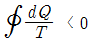
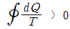
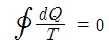
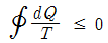
(정답률: 68%)
22. 그림과 같이 폴리트로픽(polytropic)지수 n의 값이 특정치를 가질 때 각종 상태변화가 된다. 다음 중 옳은 것은?
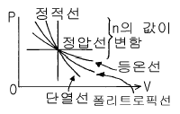
- n = 0일 때 등온변화
- n = 1일 때 정압변화
- n = ∞ 일 때 정적변화
- n = k일 때 폴리트로픽변화
(정답률: 76%)
23. 그림은 무슨 사이클을 나타낸 것인가?
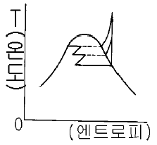
- 랭킨 사이클(rankine cycle)
- 바이너리 사이클(binary cycle)
- 재생 혹은 축기 사이클(regeneration or extraction cycle)
- 재열 사이클(reheat cycle)
(정답률: 53%)
24. 다음 중 일반 기체상수의 단위로서 적당한 것은?
- ㎏.m/(㎉.K)
- ㎏.m/(㎏.K)
- ㎏.m/(m3.K)
- ㎉/(㎏.℃)
(정답률: 49%)
25. 2mole의 이상기체가 등온상태에서 처음 부피의 3배로 팽창할 때 엔트로피 변화량은? (단, 기체상수 R = 8.31J/mole.K)
- 49.86 J/K
- 18.26 J/K
- 36.52 J/K
- 12.47 J/K
(정답률: 42%)
26. 디젤사이클의 이론열효율을 표시하는 식에서 차단비(cut off ratio) σ는 어떻게 정의된 것인가? (단, 그림참조)
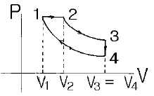
- σ = v1/v3
- σ = v3/v1
- σ = v2/v1
- σ = v1/v2
(정답률: 75%)
27. Cp와 Cv의 관계식에서 맞는 것은?
- Cp = Cv - R
- Cp = Cv + R
- Cp = R - Cv
- R = Cp / Cv
(정답률: 63%)
28. 음속에 대한 다음 설명 중 옳은 것은?
- 분자량이 클수록 음속은 증가한다.
- 가스상수가 클수록 음속은 증가한다.
- 압력이 높을수록 음속은 감소한다.
- 온도가 낮을수록 음속은 증가한다.
(정답률: 59%)
29. 2kg의 기체를 1.1bar, 20℃에서 체적이 0.2m3이 될 때까지 등온압축하고자 한다. 이 때 기체의 비열을 Cp = 0.92kJ/kg.K, Cv = 0.66kJ/kg.K이라 하면 최종 압력은 몇 bar인가?
- 5.65
- 6.87
- 7.48
- 7.62
(정답률: 31%)
30. 이상기체 5㎏을 500℃만큼 상승시키는데 필요한 열량이 정압과 정적의 경우 600KJ의 차이가 있을 때 이 기체의 가스상수(KJ/㎏· K)는?
- 1.21
- 0.83
- 0.36
- 0.24
(정답률: 33%)
31. 수증기에 대한 설명중 옳지 못한 것은?
- 엔탈피가 증가하면 온도는 상승된다.
- 압력이 증가하면 비체적은 감소된다.
- 팽창시키면 압력은 감소된다.
- 교축시키면 엔탈피는 감소된다.
(정답률: 58%)
32. 산소가 일정 체적(v=C)하에서 온도를 27℃로부터 -3℃로 강하시켰을 경우 엔트로피의 변화는 얼마인가? (단, 산소의 정적비열은 0.1562㎉/㎏℃이다.)
- -0.0165㎉/㎏.K
- 0.0165㎉/㎏.K
- -0.0139㎉/㎏.K
- 0.0139㎉/㎏.K
(정답률: 53%)
33. 증발온도가 -15℃이며, 응축온도가 30℃인 그림의 p-h선도로서 가동되는 냉동사이클에 대한 성적계수는?
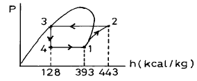
- 3.4
- 4.7
- 5.3
- 5.7
(정답률: 60%)
34. 다음 사이클 중에서 동작 유체에 상(phase)의 변화가 있는 사이클은?
- 랭킨 사이클
- 오토 사이클
- 스티어링 사이클
- 브레이튼 사이클
(정답률: 76%)
35. 이상기체의 등온변화시 열량의 변화를 계산할 수 있는 식은?
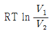
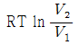
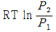
- Cp(T2-T1)
(정답률: 48%)
36. 보일(Boyle)의 법칙을 나타내는 식으로 옳은 것은? (단, T는 온도, V는 부피, P는 압력, C는 일정을 의미)
- T/V = C
- V/T = C
- PV = C
- PV/T = C
(정답률: 71%)
37. 분자량 44인 완전가스 3kg을 일정 압력하에서 10℃로부터 80℃까지 가열하는 동안에 48kcal의 열량이 소비되었다면 이러한 가스를 일정 체적하에서 10℃로부터 80℃까지 가열할 때의 열량은 몇 kcal인가?
- 17.23
- 25.38
- 38.54
- 47.06
(정답률: 34%)
38. 가스가 10kcal의 열량을 받음과 동시에 외부에 4270kg·m의 일을 했다. 이 때 이 가스의 내부에너지의 변화량은?
- 3kcal 증가
- 2.1kcal 증가
- 4.3kcal 증가
- 변화없음
(정답률: 51%)
39. Otto cycle을 온도-엔트로피 선도로 표시하면 그림과 같다. 유체가 열을 방출하는 과정은?
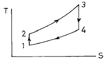
- 1 - 2과정
- 2 - 3과정
- 3 - 4과정
- 4 - 1과정
(정답률: 57%)
40. 다음 중 열역학적 성질이 아닌 것은?
- 일
- 내부에너지
- 엔트로피
- 비체적
(정답률: 57%)
3과목: 열설비구조 및 시공
41. 교축식 유량계에서 압력손실에 대한 결과를 올바르게 나열한 것은?
- 벤츄리유량계 ＜ 오리피스유량계 ＜ 플로우노즐유량계
- 벤츄리유량계 ＜ 플로우노즐유량계 ＜ 오리피스유량계
- 플로우노즐유량계 ＜ 벤츄리유량계 ＜ 오리피스유량계
- 오리피스유량계 ＜ 플로우노즐유량계 ＜ 벤츄리유량계
(정답률: 60%)
42. 다음 중 탄성압력계의 일반교정에 쓰이는 정도(精度)가 좋은 시험기는?
- 격막식 압력계
- 기준 분동식 압력계
- 침종식 압력계
- 정밀식 압력계
(정답률: 69%)
43. 브르돈(관)식 압력계에 대한 설명중 잘못된 것은?
- 유입측에는 사이폰관을 사용한다.
- 고압 측정용으로 사용한다.
- 브르돈관식의 재질은 인청동 황동 강 등을 사용한다.
- 내부의 온도가 200℃ 이상이 되지 않도록 한다.
(정답률: 70%)
44. 연소실내의 온도를 관리할 때 가장 적합한 온도계는?
- 수은(水銀) 온도계
- 알콜 온도계
- 금속 온도계
- 열전대(熱電對) 온도계
(정답률: 85%)
45. 열전도형 CO2계에 대한 특징으로 거리가 가장 먼 것은?
- 원리와 장치가 비교적 간단하다.
- CO2 측정오차가 거의 없다.
- 저농도 가스분석에 적합하다.
- H2가 혼입되면 측정오차가 발생한다.
(정답률: 52%)
46. 다음 중 다이아프램 재질로서 옳지 않는 것은?
- 고무
- 탄소강
- 양은
- 스테인레스강
(정답률: 60%)
47. 다음 중 화학적 가스분석계는?
- 밀도식 가스분석계
- 오르잣트법
- 자기식 가스분석계
- 가스크로마토그래프법
(정답률: 54%)
48. 원거리 지시 및 기록이 가능하여 1대의 계기로 여러 개소의 온도를 측정할 수 있는 온도계는?
- 유리 온도계
- 압력 온도계
- 열전 온도계
- 방사 온도계
(정답률: 59%)
49. 1차 지연요소에서 시정수(timeconstant)란 최대 출력의 몇 %에 이를 때까지의 시간인가?
- 54%
- 63%
- 95%
- 99%
(정답률: 65%)
50. 다음 유량을 나타내는 단위중 틀린 것은?
- m3/h
- kg/min
- ℓ /sec
- m/sec
(정답률: 47%)
51. 유체 관로에 설치된 오리피스(orifice) 전후의 압력차는 (ㄱ)에 (ㄴ)한다. 괄호 안 ㄱ, ㄴ에 알맞는 내용은?
- 유량의 제곱, 비례
- 유량의 평방근, 비례
- 유량, 반비례
- 유량의 평방근, 반비례
(정답률: 67%)
52. 밀폐 고압탱크나 부식성 탱크의 액면 측정이 가장 용이한 액면계는?
- 차압식
- 플로우트(Float)식
- 노즐식
- 감마(γ)선식
(정답률: 68%)
53. 전기적 절연성을 가지며 급열, 급냉에 견디고 기계적 충격에 약한 것이 결점이다. 또한 알칼리에는 약하나 산에는 강하며 상용온도가 1000℃이하인 비금속 보호관은?
- 자기관(반응 알루미나 소결품)
- 카보램덤관
- 석영관
- 고알루미나 자기관
(정답률: 72%)
54. 방사온도계의 방사에너지는 절대온도에 어떻게 비례하는 가?
- 2제곱
- 3제곱
- 4제곱
- 5제곱
(정답률: 63%)
55. 다음 중 열전도율이 가장 큰 것은?
- 공기
- 수소
- 질소
- 이산화탄소
(정답률: 61%)
56. 차압을 일정하게 유지하면서 조리개(orifice)의 개구부를 변화시켜 유량을 측정하는 방식은?
- 용적식
- 유속식
- 면적식
- 열선식
(정답률: 54%)
57. 유압식 신호전달 방식의 특징 중 틀린 것은?
- 전달의 지연이 적고 조작량이 강하다.
- 주위의 온도변화에 영향을 받지 않는다.
- 인화의 위험성이 있다.
- 비압축성이므로 조작속도 및 응답이 빠르다.
(정답률: 80%)
58. 조절계의 출력과 제어량이 목표치보다 작게 됨에 따라 감소하는 방향의 작동은?
- 정작동
- 역작동
- 정치 작동
- 추종 작동
(정답률: 58%)
59. 다음 중 케리어 가스(운반가스)로서 부적당한 것은?
- H2
- N2
- CO2
- Ar
(정답률: 60%)
60. 다음 중 공기식 전송을 하는 계장용 압력계의 공기압 신호압력은?
- 0.2 ∼ 1.0 kg/cm2
- 4 ∼ 20 kg/cm2
- 0 ∼ 10 kg/cm2
- 3 ∼ 5 kg/cm2
(정답률: 82%)
4과목: 열설비취급 및 안전관리
61. 다음 중 비중이 가장 작은 보온재는?
- 우레탄폼
- 우모펠트
- 탄화콜크
- 포옴 그라스
(정답률: 73%)
62. 판두께가 12mm, 용접길이가 30cm인 판을 맞대기 용접을 했을 때 4500kg의 인장하중이 작용한다면 인장응력은 몇 kg/cm2인가?
- 125
- 155
- 185
- 195
(정답률: 54%)
63. 다음 중 노벽 표면을 엷게 피복하는 내화물과 관계있는 것은?
- 패칭 내화물(patching refractories)
- 코팅 내화물(coating refractories)
- 슬링 내화물(sling refractories)
- 주입 내화물(injection refractories)
(정답률: 66%)
64. 노벽을 통하여 전열이 일어난다. 노벽의 두께 200mm, 평균 열전도도는 3.3kcal/m.h.℃, 노벽 내부온도는 400℃, 외벽온도는 50℃라면 10시간 동안 잃은 열량은?
- 5775kcal/m2
- 66000kcal/m2
- 57750kcal/m2
- 11550kcal/m2
(정답률: 67%)
65. 어떤 내화벽돌의 무게를 측정한 결과가 아래와 같을 때 겉보기비중, 부피비중, 겉보기기공율, 흡수율의 순서로 옳게 배열되어 있는 것은?
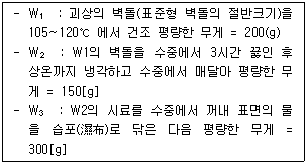
- 4, 1.333, 66.67%, 50%
- 3, 1.444, 64.52%, 48%
- 4, 1.444, 66.67%, 50%
- 3, 1.333, 64.52%, 48%
(정답률: 46%)
66. 다음 중 주철관의 접합법으로 적절치 않는 것은?
- 소켓 접합
- 플랜지 접합
- 메커니컬 접합
- 용접 접합
(정답률: 74%)
67. 마그네시아(Magnesia) 벽돌을 사용하는 경우로서 옳은 것은?
- 혼선로의 내벽
- 전기로의 천정
- 코크스로의 탄화실벽
- 평로의 천정
(정답률: 50%)
68. 연속가마(continuous kiln)의 구조에서 결정의 성숙에 의한 제품의 완성이 이루어지는 부분은?
- 예열대
- 소성대
- 냉각대
- 균열대
(정답률: 64%)
69. 가마 바닥에 여러 개의 흡입공(吸入孔)이 마련되어 있는 가마는?
- 승염식 가마
- 횡염식 가마
- 도염식 가마
- 고리 가마
(정답률: 69%)
70. 다음 중 도자기를 소성하는 터널요의 주요부가 아닌 것은?
- 예열대
- 과열대
- 소성대
- 냉각대
(정답률: 58%)
71. 염기성 내화물의 주성분이 아닌 것은?
- 마그네시아
- 돌로마이트
- 실리카
- 펄스테라이트(Forsterite)
(정답률: 68%)
72. 보일러 급수에 관계되는 P(phenolphthalein) 알카리도를 설명한 것으로 틀린 것은?
- 수중의 중탄산염, 탄산염, 수산화물, 인산염, 규산염 등의 알칼리도 일부로서 pH8.0보다도 높은 pH 부분의 알칼리분 농도이다.
- 페놀프탈레인과 치몰본의 혼합지시약을 사용해서 유산으로 측정하여 그 소비량을 이에 상당한 CaCO3ppm으로 표시한 것이다.
- 물속의 알칼리분을 표시한 지수이다.
- 물속의 Ca2+, Mg2+의 양을 표시한 지수이다.
(정답률: 64%)
73. 다음 중 보온재의 보온효율을 가장 합리적으로 나타낸 것은? (단, Qo = 보온을 하지 않았을 때 표면으로부터의 방열량, Q = 보온을 하였을 때 표면으로부터의 방열량)
- Qo / Q
- Qo-Q / Q
- Qo-Q / Qo
- Q / Qo
(정답률: 63%)
74. 내화 모르타르의 구비 조건에 맞지 않는 것은?
- 필요한 내화도를 가져야 한다.
- 화학 조성이 사용 벽돌과 동질이어야 한다.
- 건조,소성에 의한 수축 또는 팽창이 커야 접합강도가 커진다.
- 시공성이 좋아야 한다.
(정답률: 74%)
75. 로내에서 연소가스가 확산될 때 평균 유속은?
- 1∼5m/s
- 5∼10m/s
- 10∼15m/s
- 15∼20m/s
(정답률: 68%)
76. 다음 중에서 유효한 가열방식이 아닌 것은?
- 연소용 공기를 예열한다.
- 연소 가스량을 많이 한다.
- 화염의 방사율을 크게 한다.
- 화염 또는 연소가스를 고온으로 한다.
(정답률: 63%)
77. 다음 중 사용목적에 따라 요로를 분류한 것은?
- 도염식요로
- 연속요로
- 소결요로
- 중유요로
(정답률: 61%)
78. 다음 중 드레인의 열역학 및 유체 역학적 성질을 이용한 트랩은?
- 서머스태틱 트랩
- 플로우트식 트랩
- 디스크식
- 바이메탈식
(정답률: 74%)
79. 다음 중 나사이음에서 최대 효율을 표현한 식은? (단, 마찰계수 μ = tanρ)
- tan2(45° + (ρ/2))
- tan2(45° + ρ)
- tan2(45° - (ρ/2))
- tan2(45° - ρ)
(정답률: 66%)
80. 운전중인 보일러에 있어서 튜브내면이 물처리 불량때문에 부식이 발생한 경우 일반적인 원인을 열거한 것으로 관련이 없는 것은?
- 보일러 물의 pH 저하
- 용존산소
- 질소가스
- 보일러 물속의 알칼리도의 상승
(정답률: 71%)
설명: 액체연료는 고체연료에 비해 연소온도가 낮기 때문에 연소할 때 국부적으로 과열이 발생할 가능성이 높아진다. 이는 화재, 역화 등의 위험을 증가시킨다. 또한 사용하는 버너의 종류에 따라 소음이 발생할 수 있다. 액체연료는 국내 자원이 없어 모두 수입에 의존해야 한다는 것도 결점 중 하나이다.